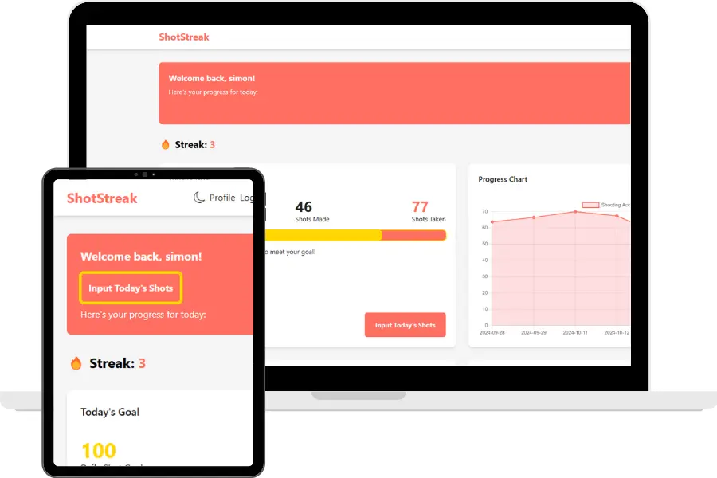

Shotstreak
Track Your Shooting Progress With Shotstreak
See real progress and improve your skills with powerful analytics and statistics get started with Shotstreak today!

What Is Shotstreak?
ShotStreak is your personal basketball shot-tracking assistant designed to help you improve your game. Whether you're practicing on your own or competing with friends, ShotStreak allows you to set daily shooting goals, track your progress, and stay motivated. With an easy-to-use interface and powerful analytics, you can visualize your performance, push your limits, and see real results.